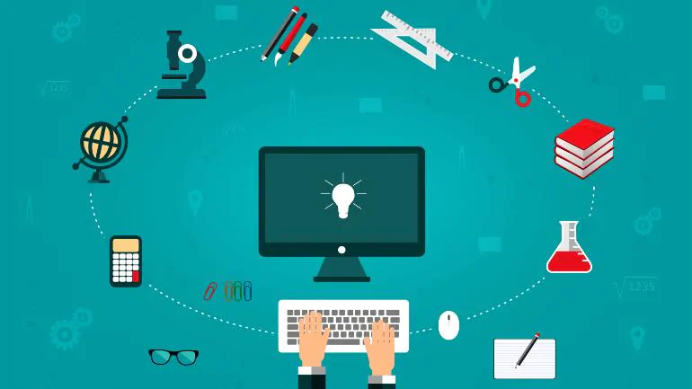

Technology in daily life
24th May 2021
This contemporary world has been hugely affected by modern techology and has completely changed our lives. Can you name any one sector that is untouched by technology? I dont think you can because technology is everywhere. From schools, to hospitals, to banks , to agriculture, to offices, to almost everything. It feels unreal to have grown from CRT televisions being the most advanced technology to almost every kid having a smart phone, to not go to schools and easily take online classes, to work from home, to shop online, to even digital health cares. The technology definately has negative effects but we cannot deny the fact that how easy everything has become because of Technology. For this part, we will look upon the impacts of technology in a Student's daily life. Lets get started.
As a student and a youngster born in the age of techonology, almost everypart of our life is covered by techonology and has definately made it easier and efficient. The importance of technology as a student was realized better when the pandemic started and almost every level of education was conducted online. Well, definately online education kept us safe along with our education not being hampered. Presentation of information using technology, also makes learning effective. We dont have to grab a dictionary to search for a word or dont have to read huge encylcopedias for some extra knowledge. Confusions can be easily washed away with just a tiny bit of surfing through the internet, all thanks to the World Wide Web.
It has become difficult to imagine our lives without our smartphones, high speed internet, apps that keeps us connected with our friends and family. We can so easily share information amongst our friends with just a click of a button. And not just for eduction and learning, it has also upgraded the level of entertainment. We dont even have to go to the cinemas to watch the latest movie or a series. All we have to do is grab our TV remote and browse through any OTT platform. Videogames are so much fun alone or with our friends. Overall, technology in a student's daily life is included in almost everything, from morning classes, to some extra research, to the source of entertainment. It has become the part of our lives.
Positive and Negative Impacts

Now, lets discuss about the pros and cons of technology. I'm sure you have got alot of information on the advantages of technology in a student's daily life from the section above. We can clearly feel the positive help that technology has contributed in our daily lives. Education, extra information and knowledge, communication, entertainment, laboursaving and time saving are some sectors and factors that technology contributes in.
But along with the positive sides the negative sides comes along. We are being consumed day by day by the technology. We tend to spend hours on our laptops, tablets or phones in the name of entertainment doing nothing productive at all. This brings in physical as well as mental issues, declining the level of creativity and making us dull day by day. We are being lazy and inviting severe physical issues beacause we think its easy to do everything online. Excessive use of internet during the class can affect ones education. Also, we are losing our sociability in the name of making some virtual friends through social medias which can some time bring in issues like cyber bulling and cyber crime. We are so consumed that even when we are with our parents spending our most precious time, we dont mind scrolling through our feeds or chatting with our friends for hours. Most of all we are getting addicted to technology.
The world is becoming an innovative place, but, its never good to move too fast, as, the speed in which we are growing can hurt alot of us, as many people are jobless unable to adapt the changes. So, we need to find the right pace of growth so as to slow down things a little and make the negative impacts minute so that the poeple can adjust.
Artificial Intelligence
This technology is to create Human like intelligence in machines.
Wall-to-Wall

For US
Computer Languages used to create softwares, develope webpages, applications and many more.
Addiction

Growing addiction of technology in children is one of the major problems tat should not be disregarded.